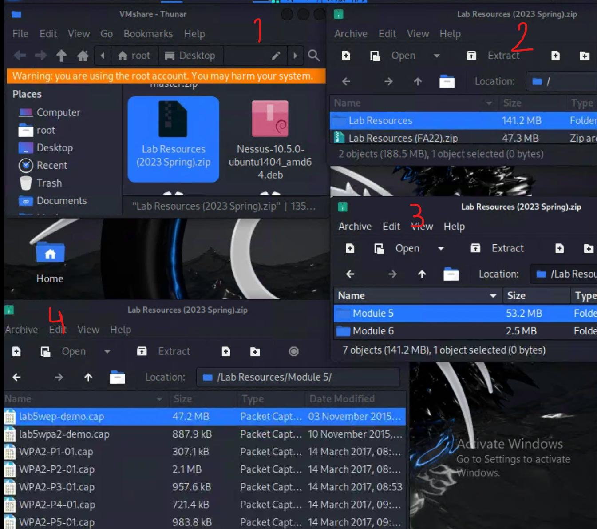
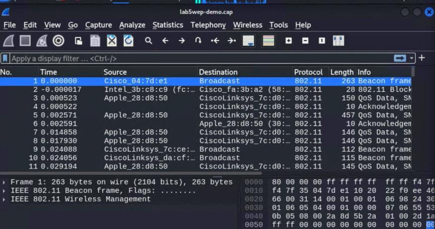
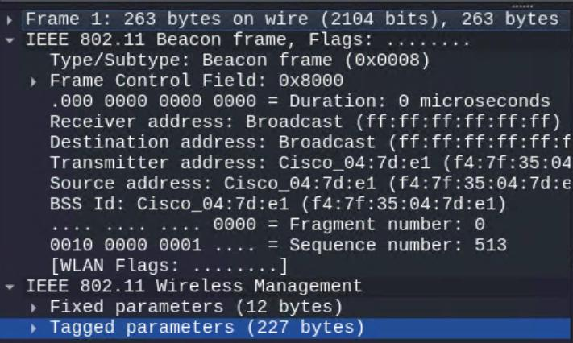
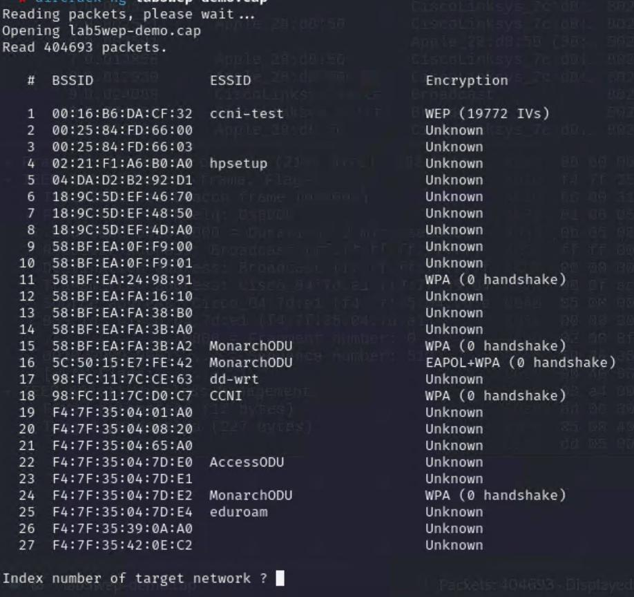
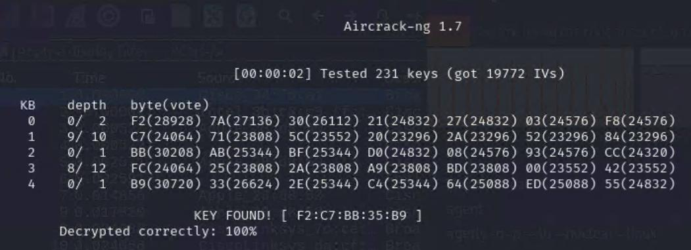

VM's Used
- Kali - Internal Workstation
Opening Up Encrypted Wired Equivalent Privacy (WEP)
1. I opened Kali - Internal Workstation, clicked on VMshare > Lab Resources (2023 Spring).zip >
Lab Resources > Module 5 > lastly, I clicked lab5wep-demo.cap.

Navigating Wireshark

2. This is the packet captured of the lab5wep-demo.cap. A packet is a small, formatted
chunk of data traveling across a network (videos, pictures, emails, etc).
3. I reviewed the 802.11 wireless frames:

- A Beacon Frame is the flashing light that the lighthouse sends out every 100 milliseconds to say, "Hey, I'm here! Here is my name, and here is how you can connect to me."
-
The "To Everyone" Address: Because the router is shouting into the air for any nearby device to
hear, the receiver and destination addresses are set to Broadcast (
ff:ff:ff:ff:ff:ff) so no specific device is left out. - The Router's ID (MAC Address): It lists the router's unique hardware address (the BSSID) so devices know exactly which physical device is broadcasting the signal.
- The Packet Counter (Sequence Number): A tracking number that makes sure the frames are read in the right order and ignores duplicates if interference scrambles something in the air.
Extracting Aircrack-ng
4. Aircrack-ng is used to perform complete wireless network security auditing and penetration testing.
In addition, it comes with a collection of commands such as:
- airmon-ng: Used to enable and disable "monitor mode" on your wireless network card, allowing your computer to listen to all nearby Wi-Fi traffic rather than just traffic intended for your device.
- airodump-ng: Used for packet capture; it scans surrounding wireless networks, displays active access points (showing BSSIDs, channels, and encryption types), and tracks connected clients.
- aireplay-ng: Used to inject frames into a wireless network to generate traffic, deauthenticate legitimate users, or speed up the collection of packets (such as WEP IVs).
- aircrack-ng (the core tool): The actual cracking engine that processes the captured
.capor.ivsfiles to recover the pre-shared key or WEP password.
5. To use aircrack-ng I opened a terminal window and used the following command:
- The path is the exact address on your computer showing where that folder is located.
- The backslashes (
\) tell Linux that the space is part of the folder name, not the start of a new command.
6. I then typed this aircrack command:
Output:

This screen displays a list of all the Wi-Fi networks found inside your lab file. In a real scenario, I (the attacker) would be looking at all the networks I have access to in a neighborhood-wide list of routers.
After the "Index number of target network" output, I responded with "1".

SUCCESS!
KEY FOUND! [ F2:C7:BB:35:B9 ]
This is the exact WEP encryption password for the ccni-test network. In a real-world
penetration test, typing this key into a Wi-Fi prompt gives full access to the network.
My Takeaway
🔓 WEP Is Broken
WEP encryption is completely insecure because its mathematical weakness (Initialization Vectors)
allows anyone to crack the password in seconds using statistical analysis tools like
aircrack-ng.
⌨️ Command-Line Control Matters
You learned how to navigate Linux directories (cd) and run wireless tools targeting
specific networks (BSSIDs) via terminal commands.
📡 Wi-Fi Is Inherently Public
Routers constantly shout their presence using Beacon Frames and the broadcast address
(ff:ff:ff:ff:ff:ff), meaning anyone nearby can detect and audit surrounding networks.
✅ Hands-On Validation
You proved the attack worked by extracting and verifying the exact key
(F2:C7:BB:35:B9) with 100% accuracy.